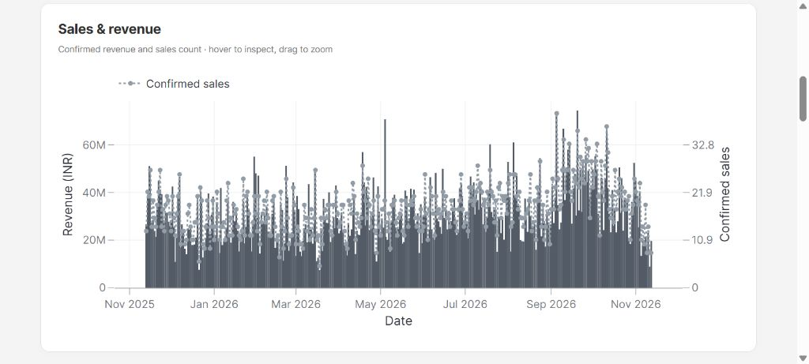
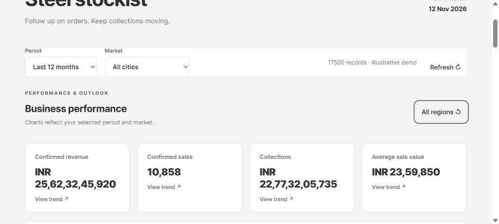
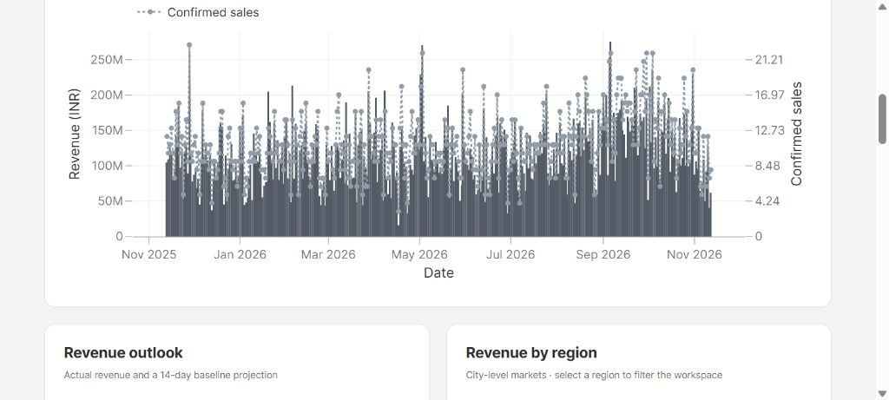
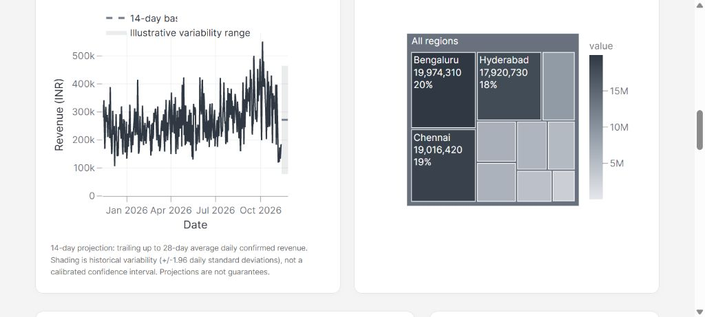
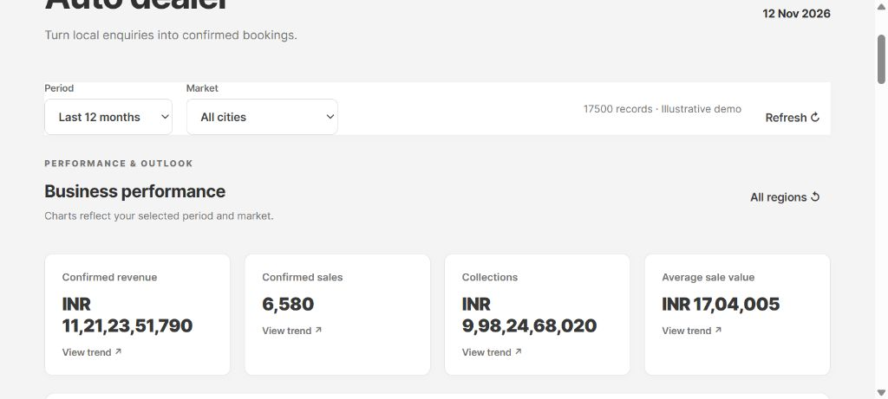
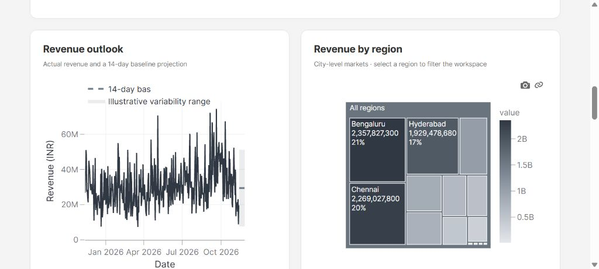

Sales & revenue
Compare confirmed revenue with sales count. Hover for detail, zoom into a period and export a chart image for your next review.
Interactive sales analytics, practical AI guidance and a professional grey-and-white workspace. Explore four industry demos built around enquiries, confirmed revenue, collections and business follow-up.
 Powered by AWS
Powered by AWS

Each app now combines Vizro-generated interactive charts with shared period and city filters. Choose 7, 30 or 90 days, or explore the full dataset with Last 12 months.
Compare confirmed revenue with sales count. Hover for detail, zoom into a period and export a chart image for your next review.
Confirmed revenue, confirmed sales, collections and average sale value update with your selected period and market. Select a card to jump to a related chart.
View actual revenue alongside a 14-day baseline projection based on the trailing average. Sparse data displays a clear insufficient-history message.
A treemap reveals the contribution of each city-level market. Select a region to filter the workspace, then reset to compare all regions.
Forecasts are illustrative projections, not guarantees. Shading shows historical variability, not a calibrated confidence interval. The demos use fictitious records and do not represent live customer activity.
Each app contains 17,500 synthetic records, with regional variation, seasonal activity, open pipelines, confirmed sales, collections and overdue scenarios. Sign-in is required.

17,500 synthetic records
Orders, collections and inventory in one view.
Track confirmed orders, contractor and dealer enquiries, outstanding collections, product availability and regional demand.
Open steel demo ↗
17,500 synthetic records
From enquiry to booking and collection.
Explore property enquiries, confirmed bookings, payment follow-ups, inventory and city-level revenue.
Open property demo ↗
17,500 synthetic records
A clearer view of commercial operations.
Review service enquiries, attended appointments, service mix, collections and appointment-slot availability. Synthetic business data only.
Open clinic demo ↗
17,500 synthetic records
See the dealership pipeline clearly.
Compare vehicle enquiries, confirmed sales, collections, product availability and regional performance across a multi-brand demo.
Open auto dealer demo ↗New screenshots show the Gateway Marketing branding, neutral interface and interactive analytics. Open a full-size image to inspect the details.

The GPT-6 Luna adviser uses summary figures and your question to suggest practical follow-up actions. Built-in prompts help you focus on sales channels, improve collections and plan your week.
Review AI suggestions before acting, and keep personal or sensitive information out of questions.
The deployed demos combine Amazon CloudFront, EC2, S3 and Cognito with Vizro, Plotly and the AI adviser.
CloudFront delivers the apps, EC2 runs the application services, S3 stores synthetic source datasets and Cognito protects sign-in.
Interactive revenue trends, baseline projections and regional treemaps sit alongside responsive KPI cards and filterable records.
Keep your current systems. Map customer-specific data and KPIs during implementation. SAP and Tally configuration and file-import workflows are available; a live connection requires setup and validation.
These are demonstration environments. Synthetic history is dated as of 12 November 2026 and does not refresh as a live feed. Live ERP/CRM ingestion, refresh schedules, access roles and production service requirements are agreed for each customer.
Tell us your industry, current ERP or CRM, and the decisions your team needs to make. We will shape the next step around your KPIs and workflow.
Submit your details and I will get back to you with a suitable demo plan.